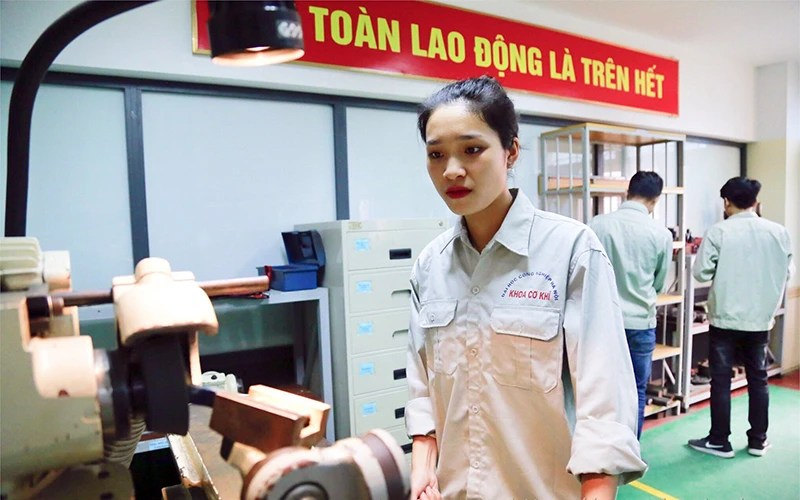

Nữ sinh viên tiêu biểu trong nghiên cứu khoa học
Sinh ra và lớn lên ở vùng quê thuần nông thôn Thọ Ða, xã Kim Nỗ, huyện Ðông Anh (Hà Nội), Nguyễn Thị Trà (sinh năm
1998) luôn chăm chỉ học tập và 12 năm liền là học sinh giỏi. Những năm tháng còn là học sinh, Trà ấp ủ ước mơ thi
vào một trường đại học chuyên ngành cơ khí. Giờ đây, khi ước mơ đã thành hiện thực, Trà nhớ lại: “Khi chọn trường
đại học để làm hồ sơ dự thi, em được người thân giới thiệu về Trường đại học Công nghiệp Hà Nội. Em rất hào hứng và
mong ước được học ở ngôi trường này, vì nghe nói môi trường học tập và rèn luyện về cơ khí, chế tạo ở đây có chuyên
môn cao. Tuy nhiên, điều băn khoăn lớn nhất của em là ở đây hầu hết là các bạn nam”.
Năm 2016, Trà thi đỗ vào Trường đại học Công nghiệp Hà Nội, Khoa Cơ khí, ngành học cơ khí chế tạo máy. Ðúng như lo
lắng của em, cả lớp có 70 sinh viên thì mỗi mình em là con gái. Sau này tìm hiểu thêm, Trà mới biết, thậm chí cả
khóa học năm ấy, cũng chỉ có mỗi em là con gái làm hồ sơ đăng ký dự thi vào trường. Tuy nhiên, không vì thế mà bị
phân tâm, em nhanh chóng quen trường, lớp và bị cuốn hút bởi nền nếp học tập nghiêm túc của các bạn và các bài giảng
chuyên sâu của giảng viên. Ðó cũng là lý do đưa em đến với nghiên cứu khoa học. Ngay trong năm học đầu tiên, Trà bắt
đầu tham gia nghiên cứu khoa học với đề tài: “Nghiên cứu, tính toán, thiết kế máy đánh bóng kim loại”. Bằng nỗ lực
của bản thân và các bạn trong nhóm nghiên cứu, đề tài đã đoạt giải khuyến khích của trường. Trà cũng nhiệt tình tham
gia hoạt động đoàn từ năm học đầu tiên. Là thành viên nữ duy nhất của lớp ham mê nghiên cứu khoa học, Trà luôn được
thầy Bí thư Ðoàn của khoa hướng dẫn, giúp đỡ tận tình.
Vì sao em theo đuổi một chuyên ngành mà không hề dễ dàng đối với nữ giới? Trà chia sẻ: “Giải thưởng của năm học đầu
tiên đã thôi thúc em học tập, là bước khởi đầu hình thành cho em tư duy nghiên cứu khoa học. Nhiều người nói con gái
học cơ khí là vất vả, nặng nhọc, nhưng với em, mọi môn học đều không quá khó”. Với học lực giỏi, thành tích của Trà
ngày một dày lên trong bốn năm học đại học: Giải thưởng Sinh viên 5 tốt cấp trường năm học 2017-2018; Gương mặt trẻ
tiêu biểu cấp trường năm 2019; đạt năm kỳ học bổng, trong đó có một kỳ xuất sắc và bốn kỳ giỏi; Học bổng Nguyễn
Thanh Bình năm học 2016-2017; học bổng của Quỹ học bổng quốc tế Nitori năm 2019…
Kể về những trải nghiệm khi là sinh viên tham gia nghiên cứu khoa học, Trà cho rằng, khi nghiên cứu các đề tài ứng
dụng, em nhận thấy việc học trên lớp chỉ là những kiến thức cơ bản ở trong giáo trình. Khi bắt tay nghiên cứu, lại
là những kiến thức mới, em và các bạn phải tự tính toán, tìm hiểu về máy, nhất là những loại đang có trên thị
trường. Càng tìm hiểu, càng thấy có sự cuốn hút kỳ lạ. Mới đây, Trà cùng nhóm nghiên cứu đã triển khai đề tài: “Tính
toán, thiết kế máy làm cốc đựng nước thân thiện với môi trường (tự hủy)”. Hội đồng nghiệm thu đề tài của trường đánh
giá kết quả nghiên cứu rất cao, bởi máy rất thiết thực trong việc bảo vệ môi trường, góp phần loại dần các sản phẩm
làm từ vật liệu nhựa.
Không dừng lại ở những kiến thức được học trên lớp, Nguyễn Thị Trà đã tham gia và là Hội phó Hội sử dụng phần mềm
CAD/CAM/CAE-CNC 4CHaUI. Ðây là câu lạc bộ học thuật của các bạn sinh viên trong trường, tập hợp các bạn khối ngành
kỹ thuật cùng trao đổi và nghiên cứu ứng dụng thiết kế chế tạo máy. Qua quá trình học tập và nghiên cứu, câu lạc bộ
đã giúp Trà bổ sung nhiều kiến thức chuyên ngành thiết kế. Không chỉ đi đầu trong học tập và nghiên cứu, Trà luôn
tích cực tham gia trong các phong trào thi đua của khoa và mọi hoạt động sinh viên tình nguyện, tiếp sức mùa thi
cũng như công tác xã hội của trường. Với những thành tích và đóng góp của mình, Trà vinh dự được kết nạp Ðảng vào
năm 2019 tại Trường đại học Công nghiệp Hà Nội. Vừa qua, Phần thưởng Nữ sinh viên tiêu biểu trong lĩnh vực KH và CN
lần thứ 21 đã được Trung ương Ðoàn TNCS Hồ Chí Minh phối hợp Bộ KH và CN trao cho Nguyễn Thị Trà. Ðây là phần thưởng
xứng đáng dành cho những thành tích học tập, nghiên cứu xuất sắc của em, đồng thời là động lực để Trà theo đuổi niềm
đam mê nghiên cứu khoa học. TS Nguyễn Văn Thiện, Trưởng khoa Cơ khí, Trường đại học Công nghiệp Hà Nội đánh giá:
Việc sinh viên của trường tham gia dự thi và giành giải thưởng ở các cuộc thi không phải là hiếm. Tuy nhiên, thành
tích của sinh viên nữ Nguyễn Thị Trà rất đáng chú ý. Sự nỗ lực, cố gắng trong học tập, nghiên cứu của em và cán bộ,
giảng viên là đòn bẩy nâng vị thế của nhà trường trong bức tranh toàn cảnh của ngành cơ khí hiện nay.
Trà sắp hoàn thành bốn năm học đại học, rời mái trường đã đưa mình đến với nghiên cứu khoa học. Mong muốn của em sau
khi nhận bằng tốt nghiệp là làm việc, tiếp tục nghiên cứu ứng dụng để có các sản phẩm hữu ích cho xã hội. Em chia
sẻ, đã có nhiều lời mời từ một số doanh nghiệp, nhưng em còn do dự bởi môi trường cũng như quy mô của đơn vị đó chưa
phù hợp mong mỏi học hỏi và rèn luyện của bản thân. Hơn nữa, mục tiêu của em là được làm việc trên quê hương Ðông
Anh, nơi có các khu công nghiệp để đóng góp sức lực, trí tuệ của mình, cũng là môi trường tốt để nghiên cứu, học hỏi
kinh nghiệm.